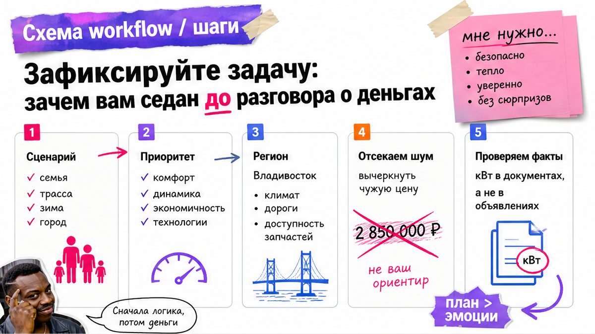
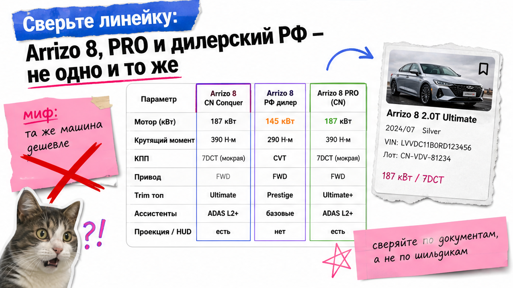
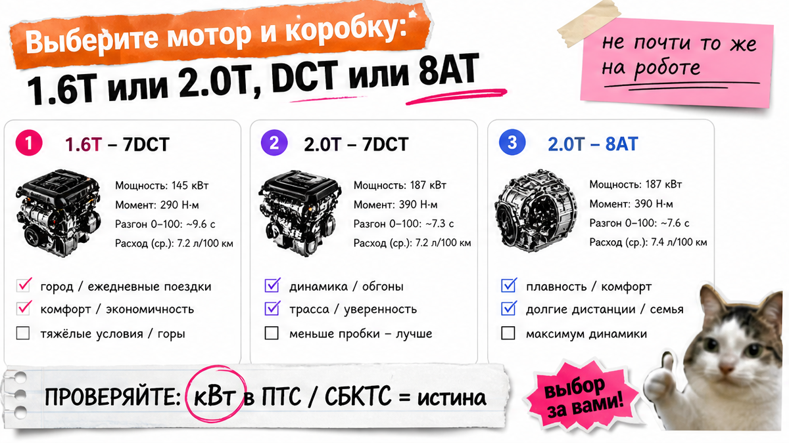

Открыл чат, увидел серебристый Arrizo 8 "2.0 полная", ткнул "забронировать" без VIN – и в инвойсе другой trim, мощность в кВт выше комфортного порога, мультимедиа только на китайском, а "зимний пакет как у дилера" в лоте отсутствует. Типичная боль: депозит на красивую фотку и путаница дилерских 150 л.с. с китайским Conquer или PRO. Ниже – чек-лист до оплаты: как выбрать Chery Arrizo 8 из Китая, сверить комплектации и не перевести деньги вслепую.
Инсайт до депозита: Сначала рынок и модель (CN Conquer vs РФ-дилер vs Arrizo 8 PRO / Tenet), потом мотор в кВт и КПП, потом trim по VIN и паспорту лота – не по скрину салона. "Магическая цена под ключ" в объявлении ещё ничего не значит. Депозит – только после пакета документов и понятной сметы через Владивосток.
На практике новичок путает три мира: российский Chery Arrizo 8 на 150 л.с. (110 кВт), китайский Conquer с 1.6T около 200 л.с. и 2.0T около 254 л.с., плюс отдельную линейку Arrizo 8 PRO и разговоры про Tenet A8. Смешать прайс дилера с лотом из Китая – ошибка дороже любой "скидки на фото".
Цель на сегодня: собрать папку "до депозита" с VIN, скрином комплектации и вопросами менеджеру – без перевода денег. Каталог и Telegram Авто-Сейлс нужны для сметы под ключ, не вместо чек-листа.

Прежде чем спорить про арризо 8 комплектации, запишите задачу. Семья и трасса? Запас хода и тихий круиз? Или динамика 2.0 и "полный список опций с фото"? Без этой строки посредник продаст чужой сценарий.
Например, человек хочет "как у дилера Ultra", а смотрит китайский Conquer 御 с другим мотором и экраном. Сделайте одну фразу "мне нужно…" и одну "мне не нужно…". Не ставьте на чужую сумму "под ключ" из рекламы – это не ваш расчёт.
Workflow до денег: задача на бумаге → одно имя модели → мотор/КПП в кВт → trim по VIN → красные флаги → смета → депозит только при совпадении.

На chery.cn у Arrizo 8 "Conquer / 征服版" рядом живут 1.6T-7DCT и 2.0T-7DCT/8AT с trim 智 / 睿 / 劲 / 御. Отдельно – страница Arrizo 8 PRO. У российского дилера Chery – другой мир: только дефорс 1.6 Turbo 150 л.с. (110 кВт) и Active / Prime / Ultra.
Типичная ошибка – перенести российский прайс и "150 сил" на китайский лот или ждать дилерский зимний пакет в Conquer с фото PRO. Рестайл Pro ещё путают с Tenet A8: для заказа из Китая это уточнение имени, не отдельный гайд.
Делайте: одной строкой в чате – "рынок CN, модель Arrizo 8 Conquer (не PRO), мотор … кВт, КПП …". Не делайте: бронировать "серебристый 2.0 полная" без имени линейки.
| Параметр | CN Conquer | РФ дилер | Arrizo 8 PRO |
|---|---|---|---|
| Моторы | 1.6T 147 кВт; 2.0T 187 кВт | 1.6T 110 кВт (150 л.с.) | Отдельная линейка; в новостях 2.0T ~254+ л.с. |
| КПП | 7DCT и 8AT (по trim) | 7DCT | Свои связки – только по паспорту PRO |
| Trim | 智 / 睿 / 劲 / 御 (+ Falcon рядом) | Active / Prime / Ultra | Не копировать опции "с фото PRO" на обычный 8 |
| Новичку | База сверки лота | Ориентир оснащения, не прайс CN | PRO в инвойсе = другая модель |
Вердикт по линейке: для Китая зафиксируйте Conquer или явно PRO. Дилерский РФ и Tenet A8 не подставляйте как "ту же машину дешевле".

Запрос "арризо 8 1.6 или 2.0" решается сценарием. На CN Conquer: 1.6TGDI 147 кВт / 310 Н·м и 2.0TGDI 187 кВт / 390 Н·м. Ориентиры связок: 1.6T-7DCT (智/睿), 2.0T-7DCT (劲), 2.0T-8AT (御) – уточняйте по паспорту MY.
В реальном проекте берут 2.0 "побыстрее", а получают робот 7DCT: владельцы пишут про пинки и перегрев в жару. Это не приговор всем DCT, но выбор осознанный: робот, 2.0T-8AT или спокойный 1.6T.
Рекомендация: рядом с мотором пишите кВт из карточки лота. Для утиля смотрят документы, не "л.с. с баннера". Часто обсуждают порог 117,68 кВт (около 160 л.с.); ваш ЭПТС/СБКТС решит по факту. Не делайте депозит, пока нет ответа, какая мощность встанет в документы.
Нужен именно 8AT – не соглашайтесь на формулировку "почти то же самое на роботе". Это другая коробка и другой характер на трассе.
"Полная максималка с фото" – маркетинг. Сверяйте trim только по паспорту лота, VIN и черновику инвойса. Выпишите имя trim → список "должно быть в договоре" → вычеркните всё, чего нет в бумагах. Подогревы, тёплое стекло, камеры – только из спецификации лота, не с рендера PRO.
Не делайте: верить опциям без VIN. Делайте: просить видео осмотра и совпадение номера на кузове с инвойсом до оплаты.
Провалы начинаются не на таможне, а на фразе "депозит, потом разберёмся". Стоп-правила для Chery Arrizo 8 из Китая:
Избегайте спешки. Давление "лот уйдёт через час" без пакета – чужой дедлайн, не ваш.
Когда линейка, мотор и trim совпали на бумаге, запросите смету с разбивкой: авто, логистика, таможенные платежи, услуги. Готовые суммы пошлин и "цену под ключ" как калькулятор здесь не публикуем – цифры считают под ваш лот.
Дилерский РФ – только ориентир оснащения, не гарантия экономии. Подбор и расчёт – в каталоге Авто-Сейлс. Вопросы по VIN до депозита – в Telegram avtosales125. Офис: Владивосток, Днепровская 40а стр. 4. Форм на странице нет.
Успех: депозит не переведён, пока нет совпадения VIN + trim + кВт + понятного договора. Иначе – новый лот, не "аванс за обещание".
Соберите сегодня чек-лист из 8+ пунктов – это первый результат без оплаты вслепую. Дальше можно идти за расчётом под ключ.
Нужен подбор без сюрпризов по trim – откройте каталог avto-sales125.ru до перевода депозита и приложите список вопросов.
Материал проверен: Редакция Авто-Сейлс (эксперты по авто под заказ из Японии, Кореи и Китая).
Достоверность: факты сверены с chery.cn (Arrizo 8 Conquer / Arrizo 8 PRO), chery.ru, Huge Auto specs, Kolesa.ru (Pro/Tenet), utilsbor-calc и разборами ловушек импорта (vc.ru); прогон источников 2026-11-04. Актуальные расчёты под ключ – в каталоге, без готовых сумм в тексте.
Разные линейки на официальном сайте Chery в Китае: отдельные страницы, моторы и опции. Сверьте имя в инвойсе: если PRO – не подставляйте мощность и список "как у обычного 8".
Выберите по сценарию и КПП. 1.6T-7DCT – спокойный базовый путь; 2.0T даёт больше тяги, но уточните 7DCT или 8AT. Зафиксируйте кВт и спросите про утиль до депозита.
VIN, trim, мощность в кВт, язык ПО, зимние опции, совпадение инвойса с объявлением, договор и способ оплаты. Нет пакета – нет перевода.
Нельзя. Без VIN и паспорта лота список опций – маркетинг. Запросите табличку, скрин комплектации и видео осмотра, затем сверяйте.
У РФ-дилера дефорс 110 кВт. Китайский Conquer – 147 или 187 кВт по CN-странице. Путать цифры до оплаты – путь к сюрпризу по документам и платежам.
В каталог Авто-Сейлс за расчётом лота и в Telegram avtosales125 с чек-листом и VIN. Чужую "магическую" сумму из объявления не берите как свой бюджет.